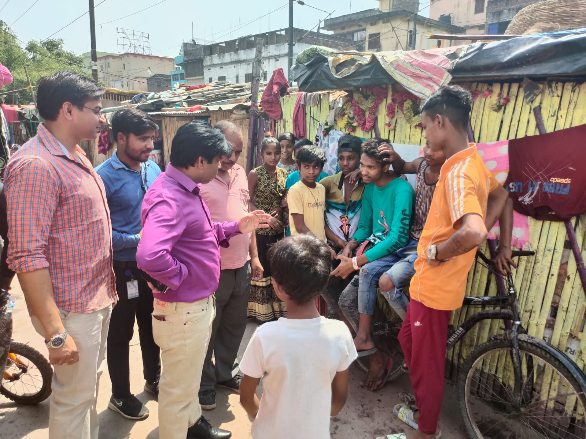
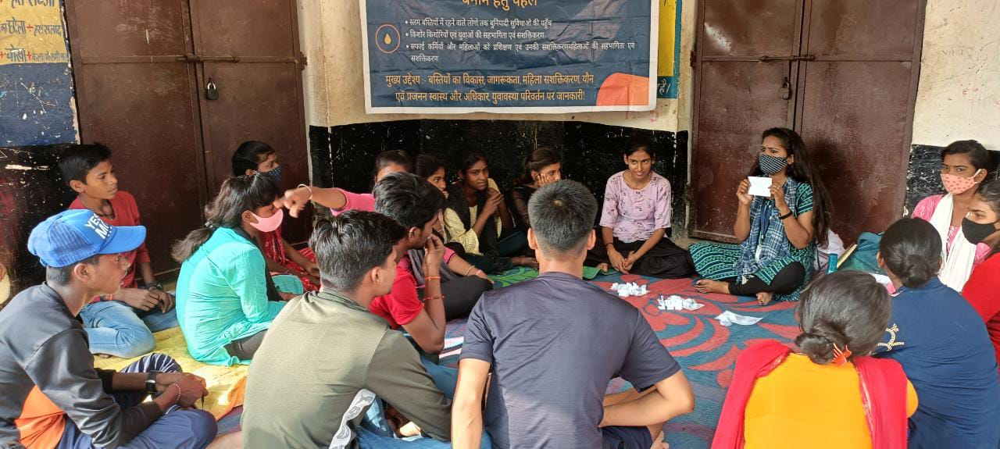
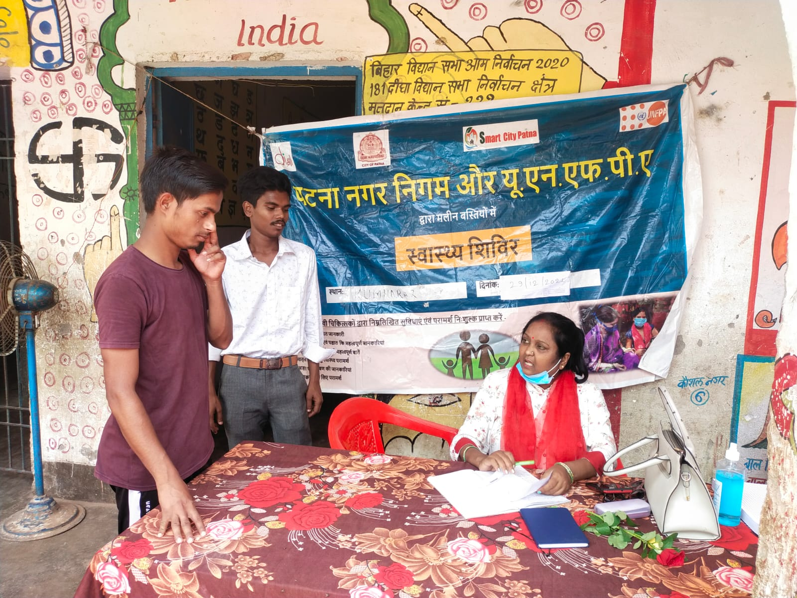
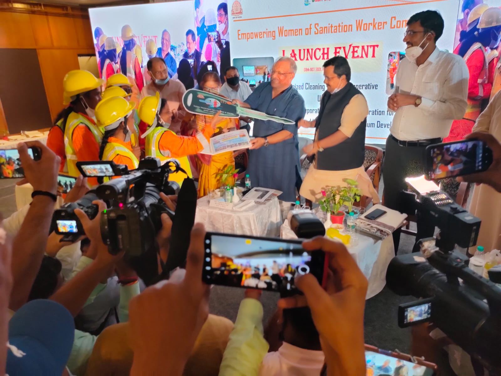
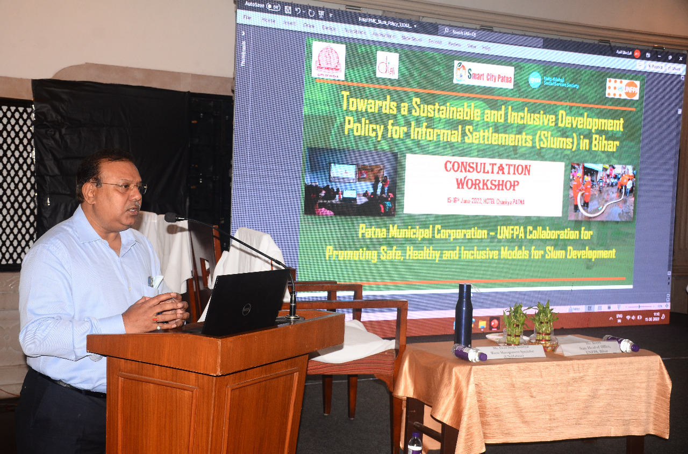

2020
Covid and worker safety
Training began for sanitation workers on protective equipment, hazardous waste and Covid precautions. The early community plan covered 20 settlements.
Project archive · 2020–2023 · Completed
This work began in the first months of Covid. Sanitation workers were keeping Patna running while handling waste that could put them and their families at risk.
Over the next four years, Diksha’s field team worked in informal settlements, at sanitation workers’ assembly points, in Urban Primary Health Centres and with Patna Municipal Corporation. The project was part of a partnership between UNFPA and the municipal corporation. It closed on 31 December 2023.
Read the project story
Meetings in the neighbourhood
Young people and women met in their own groups and then together. The subject might be Covid vaccination, child marriage, mental health, reproductive health, internet safety or finding work.

A meeting did not always end when the discussion ended. The groups chose a local concern and worked out what they could do about it.
Residents in 30 settlements wrote to Patna Municipal Corporation about facilities they needed and what the community would do to help maintain them. In 15 model settlements, small monitoring committees recorded gaps in drainage, water, toilets, street lights and waste collection. Outreach workers carried these records into meetings with circle offices and city officials.
By March 2022, the project had held 196 sessions with youth groups, 98 with women’s groups and 83 joint sessions across 49 settlements. In the last quarter of 2023 alone, the records show 138 meetings for each of the three group formats, along with social-action campaigns in 46 settlements.
Covid response and health
During July and August 2021, 56 vaccination camps in 46 settlements recorded more than 8,357 vaccinations.
The health work continued after the early vaccination drives. Camps brought consultations, tests, medicines and sexual and reproductive health services into neighbourhood spaces. The team also worked with 10 Urban Primary Health Centres, helped mobilise residents and held sessions with Mahila Arogya Samiti members, ASHA workers and ANMs.
Diksha’s 2023–24 annual report records 151 health camps reaching 13,649 people. The records do not say that the city’s larger health gaps were resolved.

Sanitation workers
The first phase ran from April to June 2020. Because large indoor gatherings were unsafe, trainers used an outdoor LED screen and video modules at the places where workers assembled before their shifts. The sessions covered protective equipment, handling Covid waste and practical safety at work.
A second phase in June and July 2021 added constitutional rights, social protection and the law prohibiting manual scavenging. By March 2022, 5,809 workers had taken part across Patna’s six municipal circles. Project follow-up records also show that 1,155 ESIC cards and 570 EPF cards had been issued.
Later classroom sessions were held for sanitation inspectors, supervisors and other municipal staff. Field demonstrations of mechanised cleaning formed part of this training.

Swachhangini
Swachhangini was registered in 2021 as a women-led cooperative. Patna Municipal Corporation issued work orders; the women carried out the work and the cooperative was paid for each manhole cleaned.
The project first spoke with 110 women from sanitation-worker communities. Fifty-four became cooperative members. By the end of 2023, 35 women were working in seven teams with seven mechanised vehicles across 23 wards in the Patliputra and New Capital circles.
Their work included mapping and opening manholes, grabbing debris, jetting the line and cleaning the vehicle afterwards. The project record stood at 15,218 manholes cleaned by 31 December 2023.
Inside the city system
The project profiled all 72 ward councillors then in office and brought councillors and municipal staff into discussions on the 74th Constitutional Amendment, the Bihar Municipal Act and neighbourhood planning.
In June 2022, a consultation workshop examined an inclusive policy for informal settlements in Bihar. The work continued in December 2023, when 19 elected representatives and Patna Municipal Corporation officials joined a two-day workshop on waste management, decentralised planning and citizen participation.
The starting point remained the meetings held in each neighbourhood. Municipal and policy discussions gave the field team another place to raise the issues residents had recorded.

Four years of work
It began as an emergency response and grew into regular work with residents, sanitation workers, health services and municipal representatives.
2020
Training began for sanitation workers on protective equipment, hazardous waste and Covid precautions. The early community plan covered 20 settlements.
2021
Women’s and youth groups were active across 50 settlements. Vaccination camps were held close to home, and Swachhangini was registered and began mechanised cleaning.
2022
Group sessions, health camps and settlement monitoring continued. By March, 5,809 sanitation workers had been trained. The project also convened a state-level policy consultation.
2023
Forty-nine settlements remained on the active list. Work included collective meetings, health services, Kishori Mela, municipal training and Swachhangini’s daily cleaning operations.
When the project closed
Final reports still listed drinking-water gaps, unusable community toilets, unsafe bathing spaces and poor drainage. Gaighat had been demolished, and part of Kaushal Nagar had also been demolished. Other settlements faced de-notification. These were citywide housing and service questions that remained beyond the programme’s authority when it closed.
The UNFPA–PMC project ended on 31 December 2023. Diksha continued to support Swachhangini after the grant closed. Relationships built with families, young people and facilitators in several of these neighbourhoods also sit behind current work such as Empowering Futures.
Project partnership
UNFPA and Patna Municipal Corporation led the wider partnership and co-financing arrangement. Diksha Foundation was the implementing partner in the settlements and with sanitation workers. UPHC teams, the District Health Society, 7Even Consultancy, BARC Trust and other organisations contributed to specific parts of the work.
The work in these neighbourhoods continues
Diksha now works with adolescent girls in several of the Patna communities where relationships were built during this project.